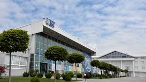

UBT - Instituti i Suksesit dhe Teknologjisë Moderne!

Me infrastrukturë moderne, lidhje të ngushta me sektorin privat dhe një përkushtim të veçantë për cilësinë e mësimdhënies, UBT është destinacioni ideal për të rinjtë që kërkojnë të ndërtojnë një të ardhme të suksesshme në teknologji dhe biznes.
UBT (Universiteti i Biznesit dhe Teknologjisë) është një institut arsimor i njohur në Kosovë, që ofron mundësi për arsim të nivelit të mesëm për studentët nga mosha 14 deri në 18 vjeç. Kjo shkollë e mesme e lartë është e njohur për fokusin e saj në fushat e teknologjisë, menaxhimit dhe biznesit, duke ofruar mundësi për një arsim cilësor që përgatit studentët për sfidat e një tregu pune gjithnjë në zhvillim dhe për studime të mëtejshme. UBT ka një histori të pasur dhe një mision të qartë: të ofrojë arsim të kualifikuar që është i përshtatshëm për nevojat e tregut të punës dhe kërkesave të zhvillimit të shoqërisë moderne. Kjo shkollë bazohet në një metodë mësimore që kombinohet me përgatitje praktike, duke siguruar që studentët të fitojnë njohuri dhe aftësi që do t'i ndihmojnë ata të jenë të suksesshëm në botën e sotme profesionale. Një nga karakteristikat kryesore të UBT është përkushtimi i saj për të ofruar programe arsimore që janë të sinkronizuara me kërkesat e tregut të punës. Shkolla ofron programe në fushat e teknologjisë së informacionit, menaxhimit dhe shkencave kompjuterike, ku studentët mund të fitojnë njohuri të thelluara për zhvillimin e softuerëve, administrimin e sistemeve dhe inxhinierinë e teknologjisë. Këto programe janë të orientuara drejt përgatitjes së studentëve për karriera të suksesshme në sektorë që janë në rritje të shpejtë, si industria e teknologjisë dhe biznesi. UBT ka krijuar një lidhje të ngushtë me sektorin privat dhe me kompani të ndryshme, që ofrojnë mundësi për praktikë dhe punësim, duke mundësuar që studentët të fitojnë përvojë praktike dhe të zhvillojnë aftësi që janë të kërkuara në tregun e punës. Bashkëpunimi i ngushtë me industrinë është një element i rëndësishëm për UBT, duke ofruar mundësi të drejtpërdrejta për punësim pas diplomimit dhe gjithashtu mundësi për zhvillim të karrierës. Infrastruktura moderne e UBT është një tjetër faktor që e bën këtë shkollë të veçantë. Ajo ofron klasa të pajisura me teknologji të fundit dhe një mjedis të sigurt dhe mbështetës për studentët. Laboratorët e teknologjisë dhe bibliotekat e pasura me literaturë janë disa nga mundësitë që UBT ofron për t'i mbështetur studentët në zhvillimin e aftësive të tyre akademike dhe profesionale. Po ashtu, shkolla ofron mundësi për seminare, trajnime dhe aktivitete që zhvillojnë aftësitë e studentëve dhe i ndihmojnë ata të përgatiten për karrierë. UBT është gjithashtu e angazhuar për të siguruar që studentët e saj të jenë të përgatitur për studime të mëtejshme në universitete brenda dhe jashtë Kosovës. Më shumë se kaq, ajo ofron mundësi për të krijuar biznese dhe për të punuar në sektorë të ndryshëm të ekonomisë, duke u përgatitur kështu për sfidat e një tregu global që kërkon profesionalizëm dhe kreativitet. Në përmbledhje, UBT ofron një mundësi të shkëlqyer arsimimi për të rinjtë që dëshirojnë të zhvillojnë aftësi praktike dhe profesionale në fushat e teknologjisë dhe menaxhimit. Përkushtimi i saj për të ofruar një arsim të cilësisë së lartë, përgatitja praktike dhe bashkëpunimi me industrinë bëjnë që UBT të jetë një mundësi ideale për ata që kërkojnë të ndërtojnë një karrierë të suksesshme.